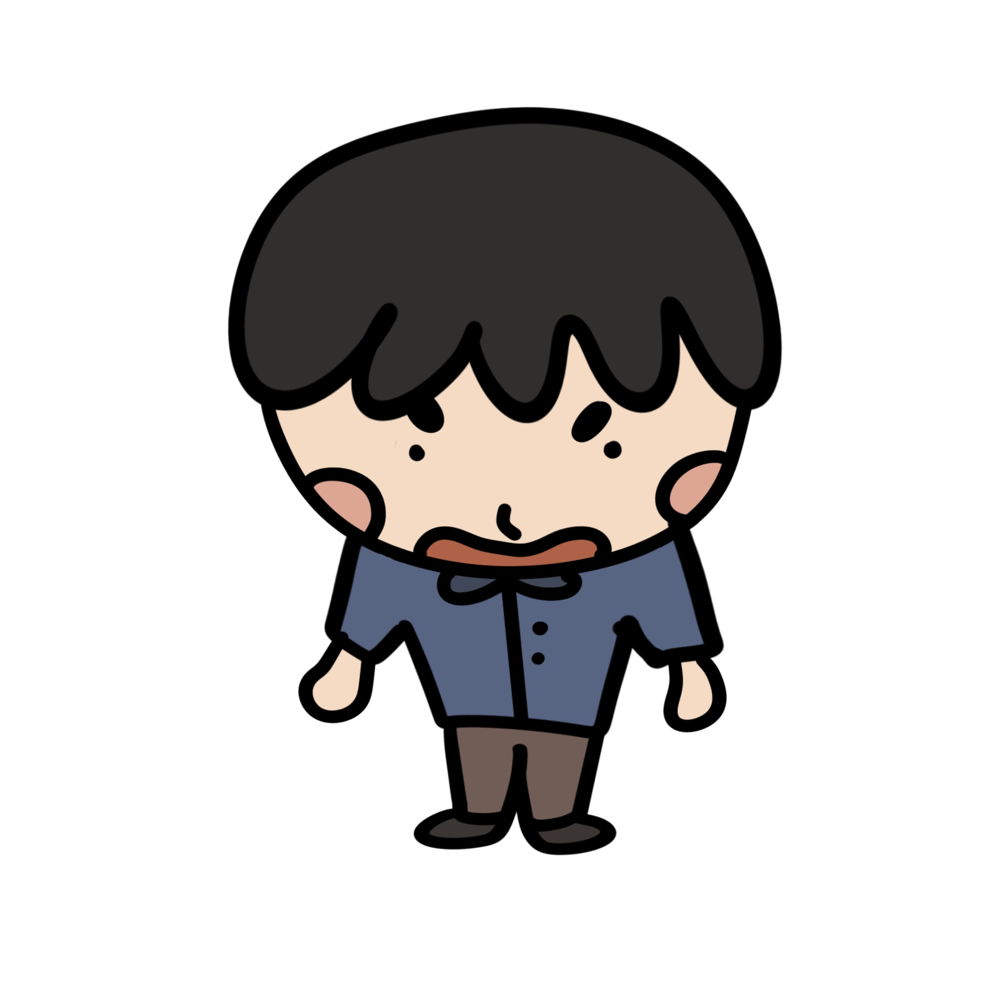

Hey I'm Renn! I'm a computer science undergrad and chronic side-quest lover.
rrsu@stanford.edu
I was a StartX Advocate in 2023-2023 and acted as a Co-Managing Director. I was part of the 2021-2022 cohort of Harvard Innovation Labs.
I was part of creating inlet.space and was named a 2022 Lookup Live Social Innovator.
My data science research focusing on quantitative and spatial analysis of archaeological sites was a VPUE grant recipient and will be presented at the Symposium of Undergraduate Research and Public Service (SURPS).
My creative writing has been recognized by Foyle Young Poets of the Year, Scholastic Art and Writing, the Pushcart Prize, among others. I am also a 2023 Boothe Prize nominee for excellence in first-year writing at Stanford.
Projects awahowhofwoieurowu.